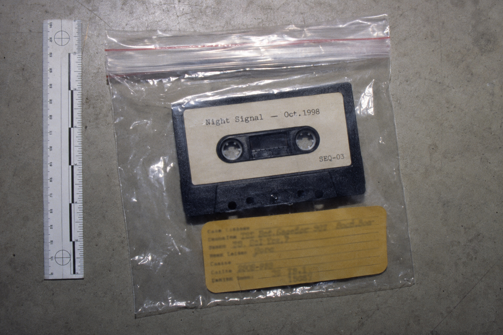

Chain of Custody
| Date | Transferred From | Transferred To | Purpose | Signature |
|---|---|---|---|---|
| Oct 16, 1998 | WHLW Station | MHSD Evidence Locker | Initial recovery | R. Caulfield |
| Oct 18, 1998 | Evidence Locker | Photo Documentation | Photographic record | R. Caulfield |
| Oct 18, 1998 | Photo Documentation | Evidence Locker | Return after photo | D. Mercer |
Item recovered during standard walkthrough of WHLW archive room following missing person report filed Oct 14, 1998. Tape found in carousel unit alongside standard broadcast stock. Label indicates station archive origin — consistent with routine production materials.
Tape flagged for documentation due to discrepancy in archive inventory log. Carousel count did not match station records. This item was not listed on the station's current inventory sheet.
Content review pending — Mercer to authorize. No playback conducted at scene.